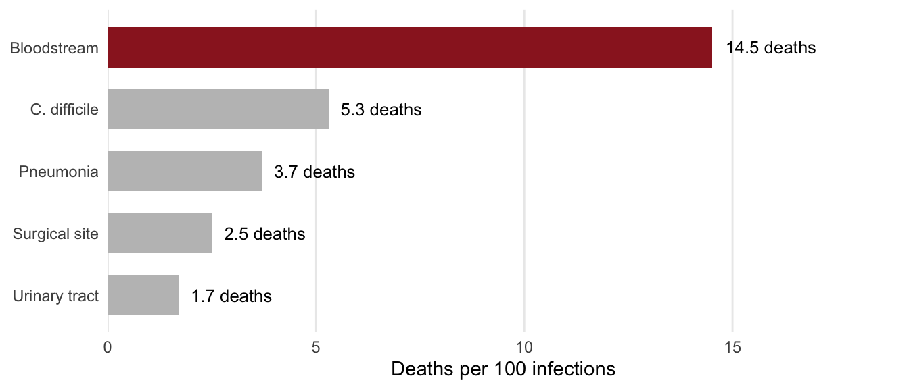

| Per 100,000 people, each year | Germany | European average | Germany’s excess |
|---|---|---|---|
| Infections caught in hospital | 592 | 468 | 27% more |
| Deaths caused by those infections | 20 | 15 | 29% more |
| Years of healthy life lost | 308 | 290 | 6% more |
Nobody expects to come home from hospital with an illness they did not arrive with. Yet every year, hundreds of thousands of people across Europe catch an infection during treatment, from a catheter, a surgical wound, a drip or a ventilator. Most recover. Some do not.
If you wanted to know which country handled this problem best, you would probably count infections per patient and rank the countries. That sounds reasonable, and it gives you the wrong answer. A study of German hospitals shows why.
The problem with counting infections
German hospitals catch fewer infections per patient than the European average. By that measure they are doing well. But when researchers counted how much damage those infections did across the whole German population, Germany came out worse than Europe, not better.
Both of those statements are true at the same time, and the gap between them is the interesting part.
The reason the two measures disagree is that they are answering different questions. Infections per patient asks how safe a hospital is once you are in it. Damage across the population asks how much harm the whole system causes to the country it serves. A hospital system can be good at the first and still do badly at the second, if it admits enough people.
There is a second counting problem underneath this one. Treating every infection as one case assumes they are all equally serious, and they are not. Some infections keep you in hospital an extra week. Others kill you. To compare them fairly, the researchers measured harm in lost years of healthy life, which combines the years lost when someone dies early with the years spent living in poor health. One lost year is one unit, whether it comes from an early death or a long illness.
What the researchers found
The data come from a survey run by the European Centre for Disease Prevention and Control across hospitals in 29 European countries in 2011 and 2012. On a single day, every patient in each participating hospital was checked for an active infection. In Germany that covered 46 randomly chosen hospitals and 9,626 patients. The researchers then scaled those figures up to the whole country using national hospital admission numbers (Zacher et al. 2019).
Germany treats each patient more safely than the European average, yet ends up ahead of Europe on every population measure (Table 1).
The explanation is volume. Germany has more hospital beds than any other country in Europe, and admits more people than almost any other wealthy country. A small risk, spread across a very large number of admissions, adds up. That makes the number of unnecessary hospital stays an infection problem in its own right, not just a budget problem. It is also the first half of the answer to the question we started with: German hospitals are not doing worse per patient, they are simply treating far more patients.
The second finding is about which infections deserve attention. The most common infection is not the most dangerous one, as Figure 1 shows.

Urinary tract infections account for nearly half of all cases, but they are rarely fatal on their own. Bloodstream infections are the rarest of the five, and they kill about one patient in seven. A prevention programme that chased the biggest case numbers would spend most of its effort on the least dangerous infection.
One caution is worth keeping in mind. These are estimates built from a single day’s snapshot, not a count of every infection, and the researchers are careful to say so. The gap between Germany and Europe in lost years of healthy life is small enough that it could, in principle, be no gap at all. The difference in infection rates is the part the evidence supports most strongly.
Why it matters
The question this study started with was which hospital system handles infections best, and the honest answer is that it depends entirely on what you count. Measured per patient, Germany looks good. Measured per citizen, it does not. Neither number is wrong, and reading only one of them produces a confident conclusion in the wrong direction.
The same trap is waiting in any statistic that comes with a denominator, whether it is crime per neighbourhood, accidents per driver or deaths per case. Before accepting a ranking, it is worth asking what sits underneath the line, and whether a different choice would reverse the order.
For hospitals, the practical message is that infection control is not the only lever. Keeping people out of hospital when they do not need to be there protects them too, because the safest infection is the one that never had the chance to happen.
Reference
Zacher, Benedikt, Sebastian Haller, Niklas Willrich, et al. 2019. “Application of a New Methodology and R Package Reveals a High Burden of Healthcare-Associated Infections (HAI) in Germany Compared to the Average in the European Union/European Economic Area, 2011 to 2012.” Eurosurveillance 24 (46): 1900135. https://doi.org/10.2807/1560-7917.ES.2019.24.46.1900135.